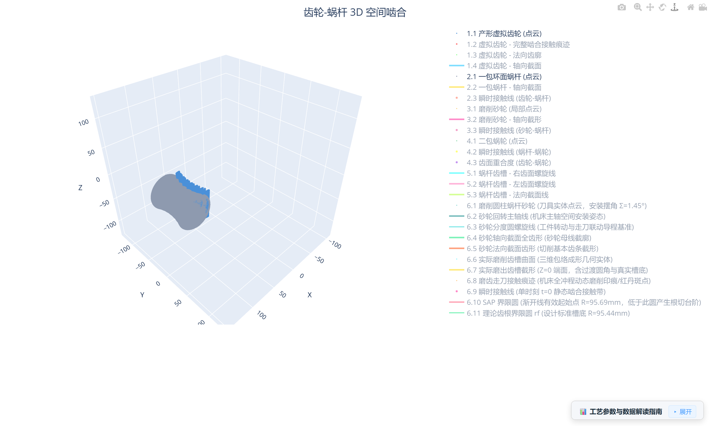
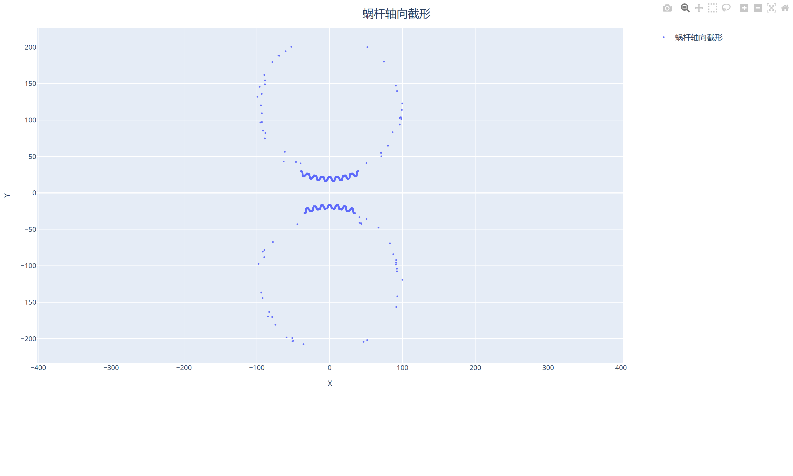
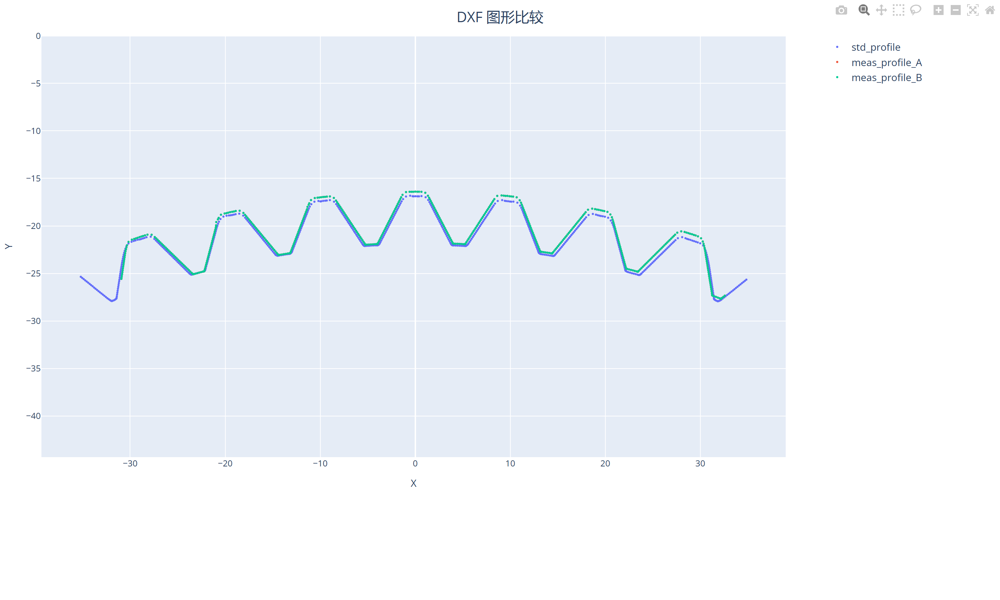

6.1 案例一：大压力角渐开线蜗杆全流程加工与检验
本案例以大压力角重载规格 Sample_C_117 为例，演示如何从 工具 零件库 点击 导入 载入配置开始，依次完成 包络砂轮截形校验 -> 锥面廓形输出 -> 西门子 NC 代码批量生成 -> 工件轴向截面提取 -> 轮廓定性与法向定量误差检验 的完整工程闭环。
一、工件基础参数设定（Sample_C_117）
在 工具 零件库 中选中 Sample_C_117 并点击绿色 导入 按钮，核心几何与工艺输入自动回填如下：
- 齿轮齿面类型：
渐开线齿轮 - 基本几何：
法向模数 Mn = 3.25 mm、法向压力角 αn (°) = 23.5°、蜗轮齿数 Z2 = 60、螺旋角 β (°) = 3.393° - 蜗杆与安装：
蜗杆头数 Z1 = 1、蜗杆分度圆直径 d1 = 38.5 mm、蜗轮面宽 B = 50.0 mm、蜗杆法向齿厚中值 Sn = 5.43 mm - 齿高与仿真：
蜗杆齿顶高 ha = 2.23 mm、蜗杆全齿高 h = 5.25 mm、砂轮外径 Ds = 460.0 mm、参与啮合齿数 = 7、修整延长齿高 = 5.0 mm、蜗杆公转圈数 = 1.5
二、包络截形与共轭啮合校验
切换至 绘图工具 包络蜗杆砂轮截形 页签，保持零补偿基准（Δa = 0.000 mm、Δα = 0.000°）点击 生成截形，核对以下实算结果：
| 校验维度 | 实算关键指标 | 工程判定说明 |
|---|---|---|
| 中心距与偏置 | 理论中心距 a = 116.921 mm，磨削中心距 246.230 mm，砂轮偏置距 Xc = 129.309 mm |
确认砂轮回转轴相对齿轮理论中心位置 |
| 产形齿轮与变位 | 分度圆半径 r2 = 97.671 mm，基圆半径 rb = 89.545 mm，变位系数 x = -0.1150 |
轻度负变位匹配给定 Sn = 5.430 mm |
| 共轭导程匹配 | 蜗杆分度圆导程角 γ1 = 4.842°，安装摆动角 Σ = 1.449°（γ1 - β） |
磨削安装角 γw = 3.393° 与螺旋角一致 |
| 根切与顶隙校核 | 理论齿根圆 df = 190.882 mm，有效渐开线起始直径 dsap = 191.382 mm（db = 179.091 mm） |
无根切，渐开线工作齿侧完整平滑；装配槽底顶隙评估为 标准匹配 |


三、锥面廓形输出与砂轮直径序列编程
- 输出规则砂轮修整廓形：进入
绘图工具锥面廓形页签，使用与Sample_C_117配套的截形参数点击生成齿形文件，导出conical_23.5.dxf与交互式 2D 预览图。 - 设定磨削参数范围：回到
磨削参数下的基本参数、高级参数与其他参数：- 确认
中心距 = 116.921、蜗杆喉部直径 = 38.5、蜗轮齿数 = 60、砂轮安装倾角 = 3.393（软件实时提示标准导程角4.8336°作参考校核）。 - 设定
磨削总深度 = 1.0、磨削步进 = 0.1。 - 设定
最大砂轮直径 = 460.0、最小砂轮直径 = 450.0、砂轮直径间隔 = 2.0。
- 确认
- 检查 NC 序列输出：指定
输出程序路径并点击生成代码后，目标目录自动建立PC_116_9210子文件夹，并一次性产出DIA_450_0000.SPF至DIA_460_0000.SPF共 6 份加工程序，其中理论Y轴加工位置 = -2.3176 mm。

四、工件轴向截面反算与实测双级对比
完成试切或虚拟加工后，在 分析工具 下依次执行截面反算与轮廓误差对比：
工件轴向截面计算：- 输入
中心距 = 116.921、蜗杆喉部直径 = 38.5、蜗轮齿数 = 60，选入砂轮截面 DXF 并点击生成工件截面曲线。 - 软件反算出分度圆直径
d2 = 195.3420 mm、端面模数mt = 3.2557 mm，生成含14,837个点的 2D 轴向轮廓，并在 3D 图中拟合出喉部螺旋曲线导程角-4.9498°。
- 输入

DXF 文件对比（定性叠加观察）：- 将理论标准轮廓
std_profile.dxf与实测轮廓meas_profile.dxf叠加在同一坐标系下，快速判别是否存在整体平移偏置、左右齿面不对称或局部凸凹趋势：
- 将理论标准轮廓

曲线误差对比（法向定量精度检验）：- 设定
曲线 1 (基准) = std_profile.dxf、曲线 2 (对比) = meas_profile.dxf后点击生成误差对比数据： - 当
最大误差距离 = 0.1 mm时：均值 = 0.0607 ± 0.0464 mm，RMS = 0.0764 mm，成功率 = 3.9%； - 放宽
最大误差距离 = 0.8 mm观察完整偏差分布时：均值 = 0.2696 mm，RMS = 0.3097 mm，成功率 = 31.6%；结合超差分布区与误差方向（上方/下方）即可直接反推安装摆角或切深零点补偿量。
- 设定